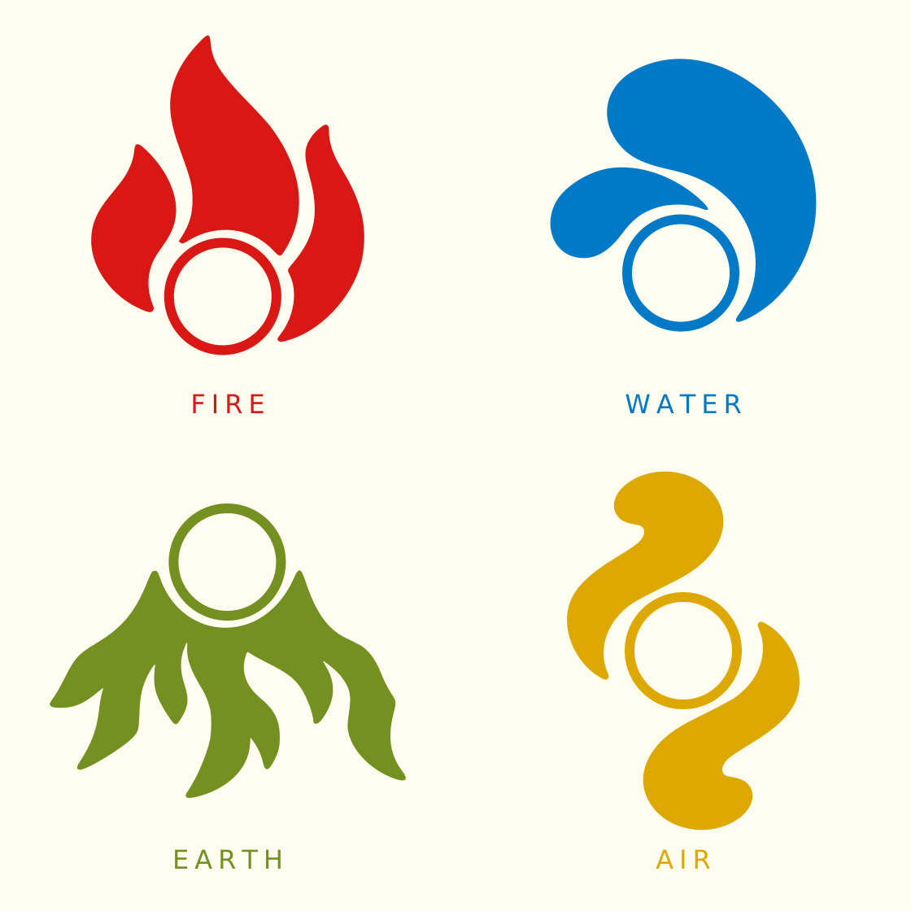
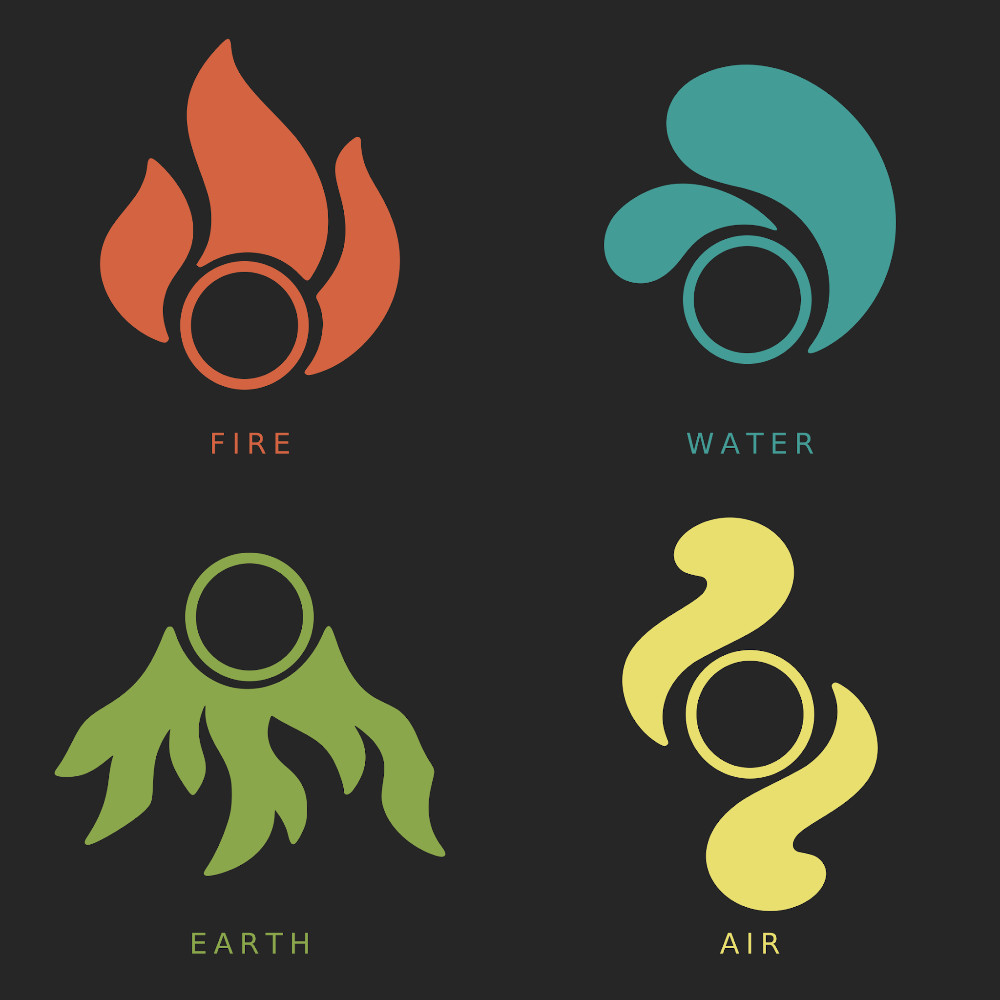
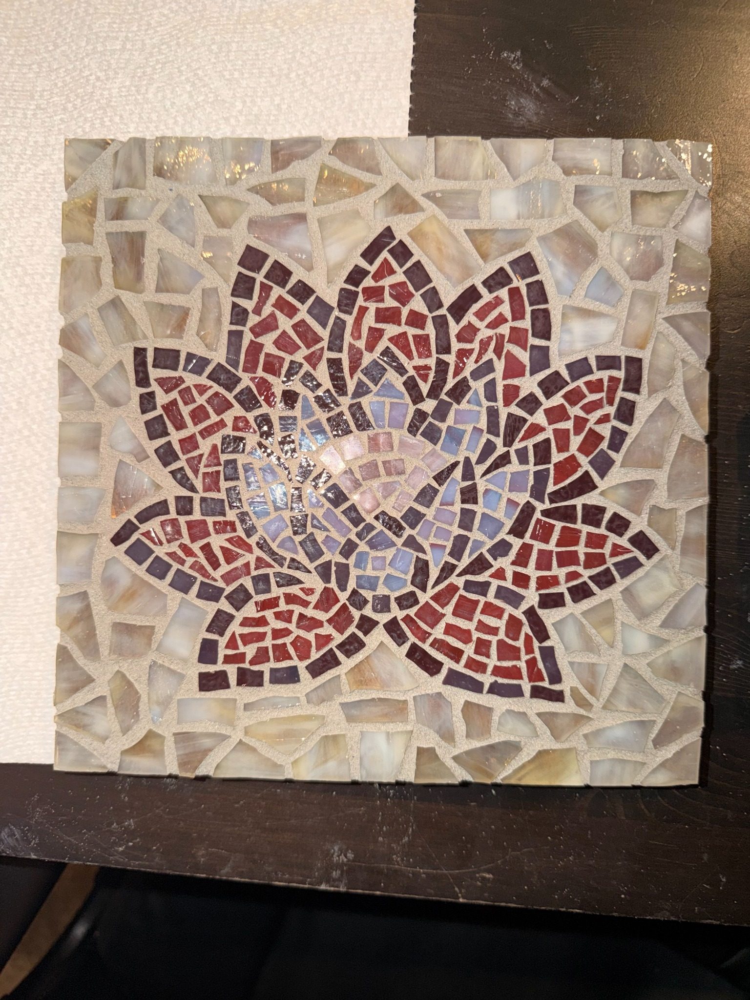
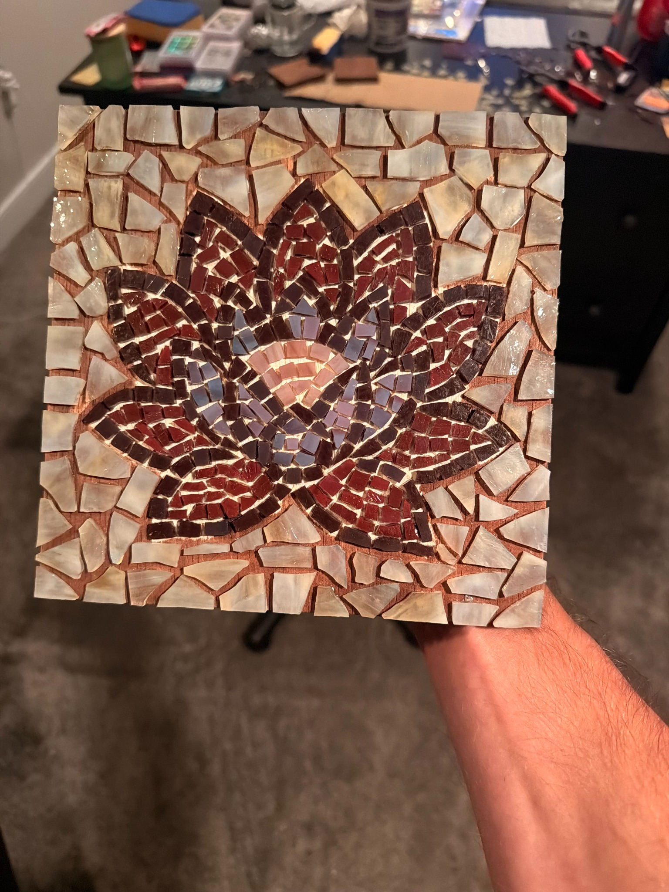

Product design · Fall 2026
Attune
Making room for a
meaningful week.
A mobile app concept for discovering activities, reflecting on experiences, and seeing the week through four elements.
Explore the project



The design question
How can a week of small experiences become something worth revisiting?
Attune is designed for young adults in college and early careers. The aim is to make space for challenge, restoration, creativity, and connection through activity discovery and reflection.
01 / Organizing the experience
Four elements,
four kinds of activity.
The elements give different experiences a shared language. Each has its own symbol and color, while the repeated circle keeps the family connected.
- Fire
- Challenge & exertion
- Earth
- Grounding & restoration
- Water
- Creative expression
- Air
- Connection & play
One family, different contrast
A shared shape.
Room to explore color.
The repeated circle connects the four symbols. The two presentations above explore how that family reads across contrasting palettes and backgrounds.
The concept survey compared six identity and background options, without a consensus. The master logo and final product palette remain open.
02 / Giving reflection a form
From cut glass
to a weekly memory.
In summer 2026, I spent more than 20 hours sourcing, cutting, and assembling glass into a lotus mosaic. That process inspired Attune’s weekly history: individual experiences forming a larger composition.




A personal making practice became a way to think about remembering.
The proposed interaction
One activity.
One piece of the week.
Each logged activity becomes an element-colored tile. The prototype lets you add an activity, inspect its tile, and undo additions. Reopening written reflections is a product concept beyond this interaction study.
Tile size has no quantitative meaning. It does not represent time, effort, frequency, or importance.
- 01Log an activity
Connect an experience to an element.
- 02Add to the weekly mosaic
One activity becomes one tile.
- 03Revisit the memory
Open the tile to return to its reflection.
Working interaction study
Try a week taking shape.
Start with a demo or add an activity. Each new activity splits the largest piece; Undo restores the previous composition. This experimental playground explores the mosaic interaction, rather than the final app interface.
Your entries stay in this browser. Tile size does not represent effort or achievement. The playground includes separate finish, motion, and icon controls.
Concept survey / October 1–6
Promising appeal.
An open clarity question.
25/34
numeric responses rated mosaic appeal 4–5 out of 5.
One additional response was unsure.
24/35
responses rated its usefulness for revisiting memories 4–5 out of 5.
Responses also associated tile size with time, frequency, or importance. That tension needs testing: the visual should invite reflection without implying a score. These are concept reactions, not evidence of successful use or improved wellbeing.
03 / Helping people find an activity
A clearer view
of personal interests.
The survey compared swiping through suggestions with selecting interests from a visible set. Interest tiles were preferred in 20 of 35 responses, providing a direction to explore next.
Early lo-fi alternatives
Sequential or side by side?
The card deck asks people to consider one interest at a time. The grid keeps options visible together, with selections that can be compared before continuing.
These wireframes test the direction of Explore. They are early concept work, not the final visual design.
Concept preference · October 1–6 · 35 responses
A direction to test.
The preference signal supports exploring visible interest choices. It does not yet show that choosing or editing interests is easier.
Next: test choosing, changing, and finding interests in a working flow.